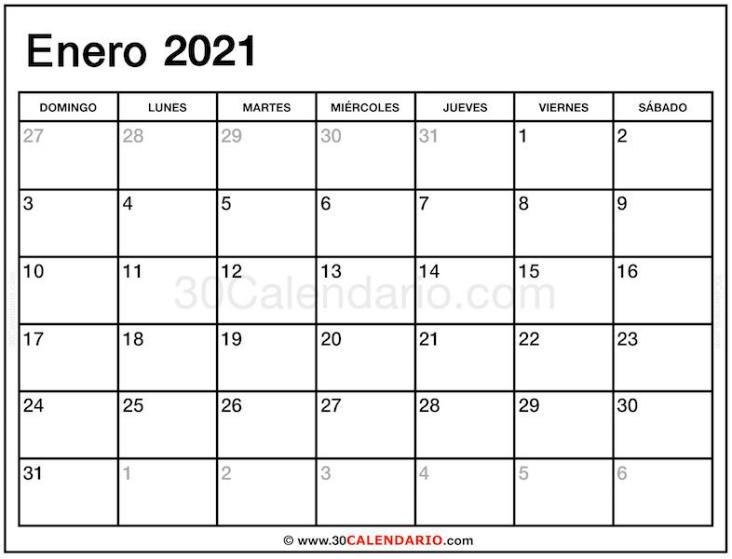

Welcome to Vacaciones en peru 2021
Sevilla I Las 'vacaciones' de Jesús Navas - AS.com
2021.04.23 12:51
Cerrar
As.com
En directo CERRAR Resultados Fútbol Motor Baloncesto Tenis Ciclismo Más deporte Opinión Actualidad Otras webs de AS Qatar 2022 eSports Newsletter Conéctate Cerrar Regístrate Cerrar Edición ES Cerrar APP Conéctate Regístrate Ediciones Internacionales España Chile Colombia México USA Argentina Perú América English عربي Volver Volver a Temas del díaTEMAS DEL DÍA
Más NASA y SpaceX Vuelta Colombia Superliga Europea Elecciones Madrid Coronavirus España Códigos Free Fire hoy European Super League Fourth Stimulus Check live Coronavirus Colombia Coronavirus Mexico Coronavirus y bonos Chile Conde Godó cuadro Playoffs Euroliga partidos Nadal Conde Godo TV Libertadores grupos Flecha Valona recorrido Conde Godó TV Euroliga TV Flecha Valona TV Eurocopa 2021 Libertadores fixture Calendario Eurocopa Calendario NBA Calendario F1 2021 Calendario MotoGP 2021 Calendario Champions League Calendario LaLiga Santander Final Copa del Rey 2021 Calendario LaLiga SmartBank Calendario Copa del Rey Calendario Segunda B Champions League 2020 Clasificacion LaLiga SmartBank Equipos clasificados para Tokio Resultados LaLiga Santander Resultados LaLiga SmartBank Resultados Champions League Juan Espino UFC Moto GP F1 Quiniela Fichajes Programacion Futbol hoy Clasificacion LaLiga Santander Códigos Free Fire hoy Ultima hora hoy Partidos de hoy Ultimas noticias hoy Oscars 2021 horario Declaración Renta ERE Vacuna Pfizer Voto correo Madrid Zonas confinadas Madrid Suscríbete a la edición impresaLaLiga Santander
LaLiga Santander Noticias Resultados Clasificación Calendario Guía Rankings y Estadísticas Equipos Jugadores Palmarés Temporadas Temporada 2020/2021 Temporada 2019/2020 Temporada 2018/2019 Temporada 2017/2018 Temporada 2016/2017 Temporada 2015/2016 Temporada 2014/2015 Temporada 2013/2014 Temporada 2012/2013 Temporada 2011/2012 Temporada 2010/2011 Temporada 2009/2010 Temporada 2008/2009 Temporada 2007/2008 Temporada 2006/2007 Temporada 2005/2006 Temporada 2004/2005 Temporada 2003/2004 Temporada 2002/2003 Temporada 2001/2002 Menú MásSEVILLA
Las 'vacaciones' de Jesús Navas
El Sevilla se marcha hoy cuatro días, casi cinco de asueto, el mismo periodo que el palaciego pudo disfrutar entre ganar la Europa League y volver al trabajo.
José A. Espina @josanespina Actualizado a: 24 de marzo de 2021 03:42 CET AFP7 vía Europa Press AFP7 vía Europa PressEl Sevilla se entrena este miércoles por la mañana y luego Lopetegui dará de descanso hasta el lunes. Cuatro días, casi cinco de vacaciones para una plantilla exhausta por la acumulación de encuentro s, que ha jugado esta temporada ya 44 partidos y apenas ha parado algún día para descansar desde el parón de noviembre. Un equipo que tras ganar la Sexta Europa League el 21 de agosto del año pasado no llegó a las dos semanas de vacaciones antes de preparar el comienzo de LaLiga y la Supercopa ante el Bayern... Y en el que un jugador, Jesús Navas, apenas si disfrutó de esos cinco días que ahora volverá a tener. Otros, como el holandés Luuk de Jong, se han tenido que ir con su selección de nuevo.
Sevilla España Noticias EstadísticasAsí que esto, en realidad, serán como otras vacaciones para el palaciego, porque poco después de levantar el título en Colonia tuvo que marcharse con España a disputar la Liga de Naciones en septiembre. Un periodo, por cierto, en el que jugó 135 de los 180 minutos posibles ante Alemania y Ucrania. Una lesión evitó que Luis Enrique le llamara para la última convocatoria, en noviembre, que tuvo que pasar recuperándose en la Ciudad Deportiva, pero esta vez podrá descansar en casa después de mucho tiempo.
Jesús Navas Sevilla Centrocampista España Noticias EstadísticasNavas, por cierto, está pendiente de renovar su contrato con el Sevilla, que ahora mismo expira dentro de poco más de tres meses, el 30 de junio. El palaciego no tiene dudas sobre querer seguir en Nervión y a sus 35 años, cumplirá 36 en noviembre, alberga esperanzas también de acudir a la Eurocopa con España. Pero deberá mejorar de unos problemas de cadera que le llevan por la calle de la amargura en los últimos tiempos. Seguro que estas minivacaciones, 'maxi' para él, pueden ayudarle.
El parón entrega más aire al fatigado plantel de Lopetegui
Jesús Navas y Joaquín, dos líderes sin fecha de caducidad
Etiquetado en: Sevilla Fútbol Club Jesús Navas Liga Santander La Liga Primera división Ligas fútbol Fútbol Equipos Organizaciones deportivas Competiciones Deportes Más0 Comentarios
Normas MostrarPara poder comentar debes estar registrado y haber iniciado sesión. ¿Olvidaste la contraseña?
Conéctate RegístrateTe recomendamos en Fútbol
ATLÉTICO DE MADRID Con Llorente todo es más fácil REAL MADRID Isco, cumpleaños amargo REAL MADRID Varane sigue enrocado BARCELONA 5 - GETAFE 2 Koeman: "Mingueza está haciendo una gran temporada; no hay problema con él" BETIS Un sueño europeo al ralentí VALENCIA El galimatías de Javi GraciaSuscríbete a nuestra newsletter
Lo más visto
1Fútbol
Sergio Ramos, ruptura total
2Fútbol
Superliga-UEFA: hay solución
3Fútbol
En Inglaterra critican al Barça
Más noticiasNike
La colección Nike Fútbol 2020/21, con un 20% de descuento extra en sus rebajas
Moda deportiva
Que la lluvia no te detenga: sal a entrenar con este chubasquero Adidas
CARGANDO MÁS NOTICIAS AS Futbol Primera